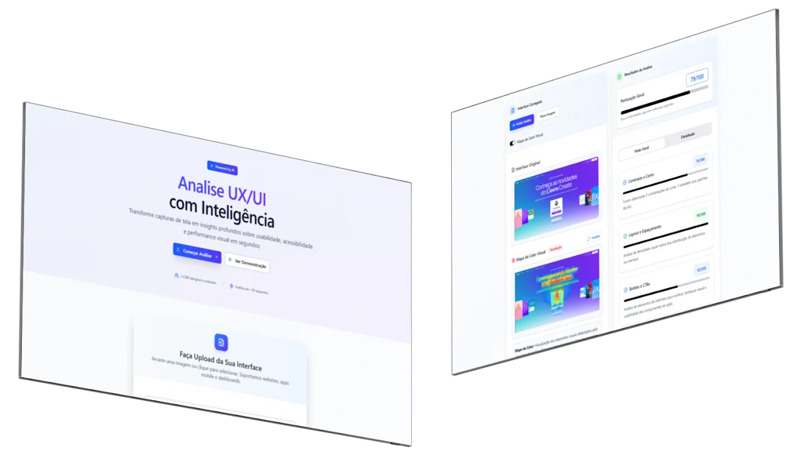
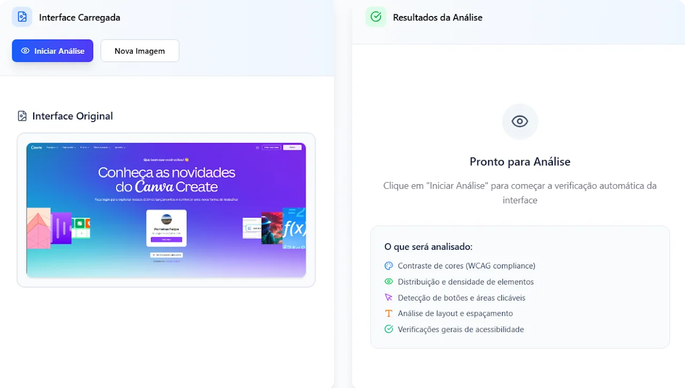
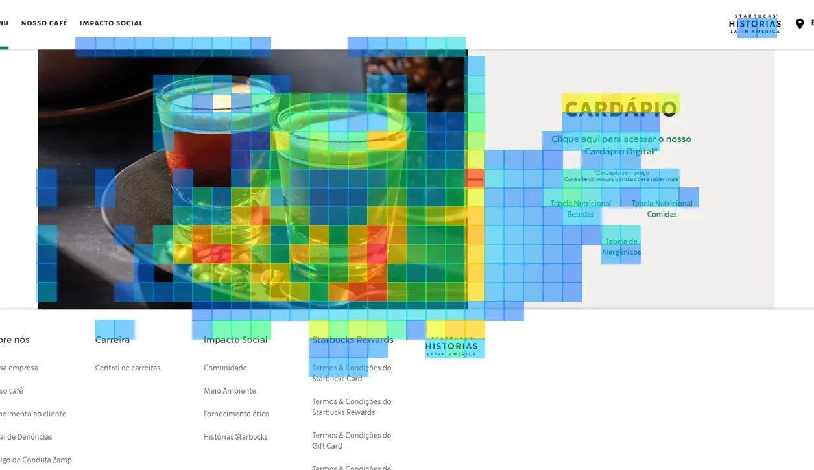

UX Analyzer
Website: UX Analyzer

UX Analyzer is a fully functional web app that analyses user interfaces using specialised algorithms and artificial intelligence to evaluate UI and UX best practices, including spacing, contrast, hierarchy, interactive elements, and accessibility.
In addition, the platform features a heatmap that simulates human visual attention and highlights the areas of the screen that are most likely to attract the user’s attention.
The web app was built entirely using Figma and Figma Make. By applying usability best practices to both the landing page and the analysis interface, the user is guided through an intuitive and user-friendly workflow.
How does it work?

They are then taken to the analysis screen to review the uploaded image.
The user uploads the screen they want to analyse.
After clicking “Start Analysis”, the application displays an overall score for the screen, followed by an individual evaluation of each analysed category.
UX Analyzer evaluates colour combinations, element distribution and spacing, prominent elements such as CTA buttons, and visual accessibility considerations.
Human Visual Attention Simulation

Heat Map
The heatmap simulates human visual attention and helps designers identify which elements on the screen are most likely to attract the user’s attention.
The product is designed to make it easier to create intuitive interfaces for both experienced designers and beginners who are still learning the fundamental concepts of UI and UX.
UX Analyzer can also be used for presentations, helping designers demonstrate to clients why a particular interface works or where it may fall short. It provides a practical visualisation of how a user who is not familiar with the research and planning behind the interface may perceive and interact with its elements.